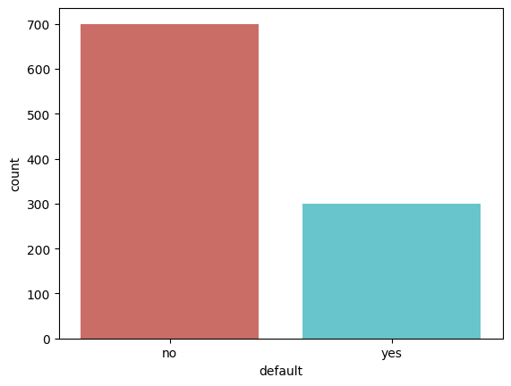

# load packages
import pandas as pd
import numpy as np
import matplotlib.pyplot as plt
import seaborn as sns
import os
import sys
import warnings
warnings.filterwarnings('ignore')Foundations of AI Project
Predicting probability of consumer credit default using AI
Introduction
Understand the creditworthiness of a customer is a key task for banks. In this project, we will use the data from a German bank to build a credit scoring model to predict the probability of default. The data is from UCI Machine Learning Repository. The data contains 1000 entries with 20 features. The features are a mix of numeric and categorical variables. The target variable is a binary variable indicating whether the customer is a good or bad credit risk. The data is split into 700 training and 300 testing samples. The goal is to build a model to predict the probability of default for the testing samples. While extension of credit can be traced back to babylonian times, the history of credit scoring classification can be traced back to a 1941 study distinguish good loans from bad loans (Crook, Edelman, and Thomas 2007). Since then there has been a
Predicting the probability of default using machine learing techniques has a long history in finance. The first credit scoring model was developed in 1958 by Fair Isaac Corporation (FICO). The FICO score is still the most widely used credit score in the world. The FICO score is based on a logistic regression model. In this project, we will build a logistic regression model and compare its performance with other machine learning models.
Exploratory Data Analysis
- Eyeball the raw data
- Check the data types
- Check the missing values
- Check the outliers
- Check the correlations
- descriptive statistics for numerical variables
- descriptive statistics for categorical variables
# load the data
dat_raw =pd.read_csv('credit.csv')
dat_raw.head()| checking_balance | months_loan_duration | credit_history | purpose | amount | savings_balance | employment_duration | percent_of_income | years_at_residence | age | other_credit | housing | existing_loans_count | job | dependents | phone | default | |
|---|---|---|---|---|---|---|---|---|---|---|---|---|---|---|---|---|---|
| 0 | < 0 DM | 6 | critical | furniture/appliances | 1169 | unknown | > 7 years | 4 | 4 | 67 | none | own | 2 | skilled | 1 | yes | no |
| 1 | 1 - 200 DM | 48 | good | furniture/appliances | 5951 | < 100 DM | 1 - 4 years | 2 | 2 | 22 | none | own | 1 | skilled | 1 | no | yes |
| 2 | unknown | 12 | critical | education | 2096 | < 100 DM | 4 - 7 years | 2 | 3 | 49 | none | own | 1 | unskilled | 2 | no | no |
| 3 | < 0 DM | 42 | good | furniture/appliances | 7882 | < 100 DM | 4 - 7 years | 2 | 4 | 45 | none | other | 1 | skilled | 2 | no | no |
| 4 | < 0 DM | 24 | poor | car | 4870 | < 100 DM | 1 - 4 years | 3 | 4 | 53 | none | other | 2 | skilled | 2 | no | yes |
# check the data for missing values
dat_raw.isnull().sum()checking_balance 0
months_loan_duration 0
credit_history 0
purpose 0
amount 0
savings_balance 0
employment_duration 0
percent_of_income 0
years_at_residence 0
age 0
other_credit 0
housing 0
existing_loans_count 0
job 0
dependents 0
phone 0
default 0
dtype: int64# check data for categorical variables
dat_raw.dtypeschecking_balance object
months_loan_duration int64
credit_history object
purpose object
amount int64
savings_balance object
employment_duration object
percent_of_income int64
years_at_residence int64
age int64
other_credit object
housing object
existing_loans_count int64
job object
dependents int64
phone object
default object
dtype: object# run descriptive statistics and transpose the output then use tabulate to display the output
from tabulate import tabulate
sum_stats=dat_raw.describe().transpose()
print(tabulate(sum_stats, headers='keys', tablefmt='psql'))+----------------------+---------+----------+-------------+-------+--------+--------+---------+-------+
| | count | mean | std | min | 25% | 50% | 75% | max |
|----------------------+---------+----------+-------------+-------+--------+--------+---------+-------|
| months_loan_duration | 1000 | 20.903 | 12.0588 | 4 | 12 | 18 | 24 | 72 |
| amount | 1000 | 3271.26 | 2822.74 | 250 | 1365.5 | 2319.5 | 3972.25 | 18424 |
| percent_of_income | 1000 | 2.973 | 1.11871 | 1 | 2 | 3 | 4 | 4 |
| years_at_residence | 1000 | 2.845 | 1.10372 | 1 | 2 | 3 | 4 | 4 |
| age | 1000 | 35.546 | 11.3755 | 19 | 27 | 33 | 42 | 75 |
| existing_loans_count | 1000 | 1.407 | 0.577654 | 1 | 1 | 1 | 2 | 4 |
| dependents | 1000 | 1.155 | 0.362086 | 1 | 1 | 1 | 1 | 2 |
+----------------------+---------+----------+-------------+-------+--------+--------+---------+-------+# check the distribution of the target variable
sns.countplot(x='default',data=dat_raw, palette='hls')
plt.show()
# run descriptive statistics for the categorical features
sum_stat=dat_raw.describe(include=['object']).transpose()
print(tabulate(sum_stat, headers='keys', tablefmt='psql'))+---------------------+---------+----------+----------------------+--------+
| | count | unique | top | freq |
|---------------------+---------+----------+----------------------+--------|
| checking_balance | 1000 | 4 | unknown | 394 |
| credit_history | 1000 | 5 | good | 530 |
| purpose | 1000 | 6 | furniture/appliances | 473 |
| savings_balance | 1000 | 5 | < 100 DM | 603 |
| employment_duration | 1000 | 5 | 1 - 4 years | 339 |
| other_credit | 1000 | 3 | none | 814 |
| housing | 1000 | 3 | own | 713 |
| job | 1000 | 4 | skilled | 630 |
| phone | 1000 | 2 | no | 596 |
| default | 1000 | 2 | no | 700 |
+---------------------+---------+----------+----------------------+--------+Methodology
Results
Discussion
Conclusion & Word Count
References
Crook, Jonathan N., David B. Edelman, and Lyn C. Thomas. 2007. “Recent developments in consumer credit risk assessment.” European Journal of Operational Research 183 (3): 1447–65. https://doi.org/10.1016/j.ejor.2006.09.100.